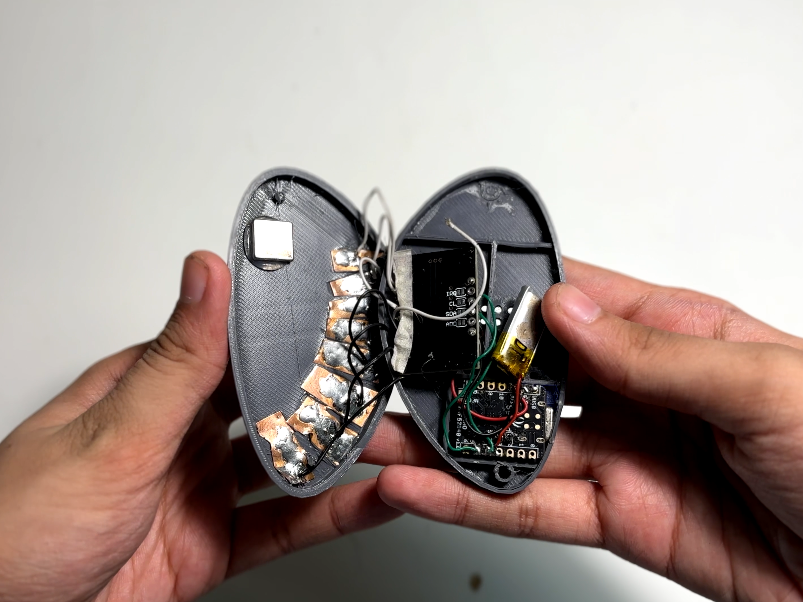
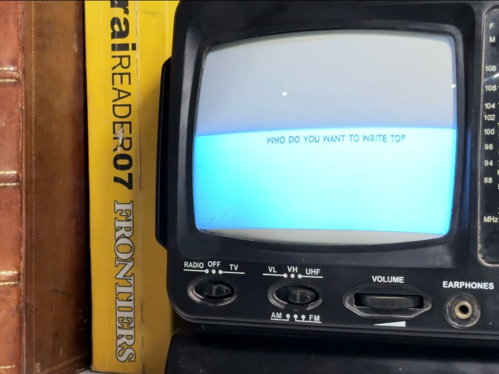
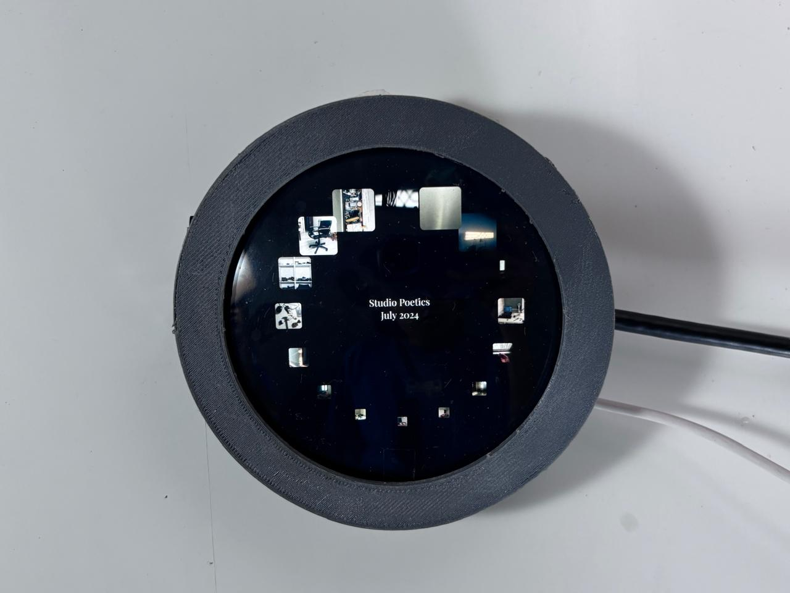
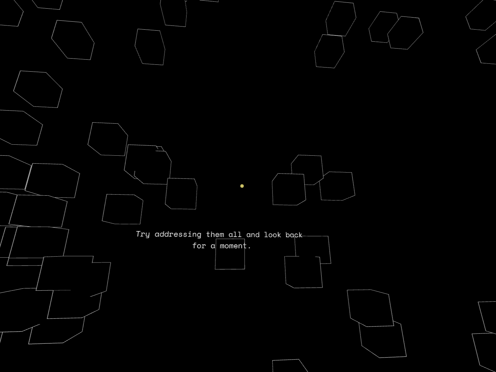
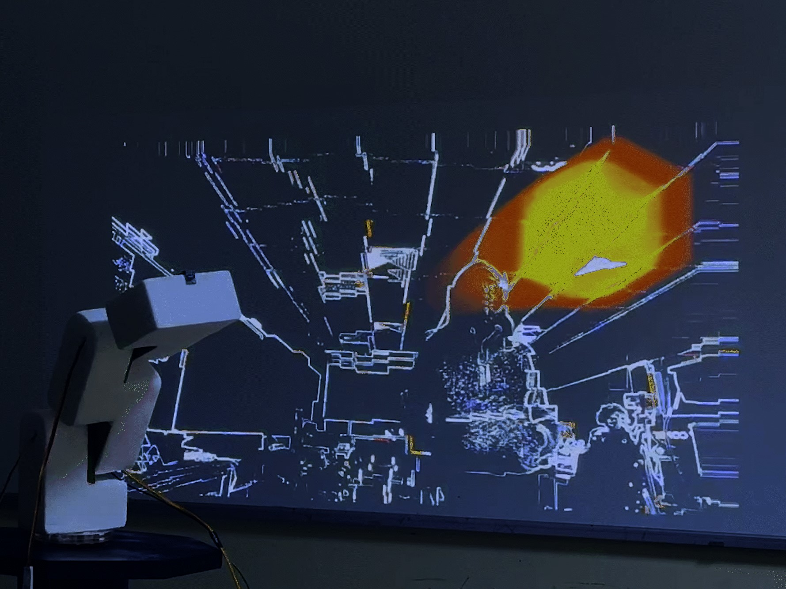

.png)
Phygital Habitat
observing potential of elements in a ‘surrounding’ environment to become digital interface components considering their physicality, epistemological and ontological qualities.

Hoverbox
an early prototype of a handheld capacitive dial.

Pebble
observe the potential of elements in a ‘surrounding’ environment to become digital interface components, their physicality, epistemological and ontological qualities could be considered vital.

Digital Letters
observe the potential of elements in a ‘surrounding’ environment to become digital interface components, their physicality, epistemological and ontological qualities could be considered vital.

Digital Photobook
observe the potential of elements in a ‘surrounding’ environment to become digital interface components, their physicality, epistemological and ontological qualities could be considered vital.

Paused - A Spatial Blog
observe the potential of elements in a ‘surrounding’ environment to become digital interface components, their physicality, epistemological and ontological qualities could be considered vital.
